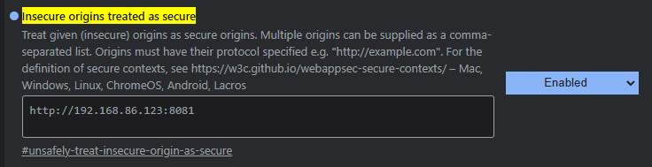

Click "Start Listening" to begin speech recognition.
Free Auto STT is a "hack" that will allow your Chrome web browser to act as an STT service for CHIM. To prevent bugs its recommended to only activate it when ingame.
It has 3 purposes:
- Uses Chrome's inbuilt STT to act as a free STT service
- Acts as an "autotalk" solution for users who do not like push-to-talk
- Allows you to talk to the AI NPCs outside of the game client
How to use it:
- Click Start Listening
- Click Allow Microphone when the popup appears
- Make sure to leave this web browser tab running in the background
- AI NPC's ingame will hear you whenever you speak automatically!
- AVOID USING THE MCM HOTKEY FOR SPEECH-TO-TEXT!
If Chrome is blocking your microphone:
- In your Chrome settings under Privacy and Security, edit Site Settings to allow your microphone
- Also check that your Windows settings are not blocking Chrome from using your microphone
- If that does not work, go to this URL:
chrome://flags/#unsafely-treat-insecure-origin-as-secure
- Enter the URL of your CHIM server in the textbox (e.g.,
http://192.168.86.123:8081 YOUR IP WILL BE DIFFERENT), select Enabled, then click Relaunch
